资源
正文
编辑器开发
01 编辑器开发基础介绍
如此构建项目：
Assets
ScenesScripts
TestA
TestB
给 Main Camera 绑一个 MultiResources.cs：
1 2 3 4 5 6 7 8 9 10 11 12 13 14 15 16 using System.Collections;using System.Collections.Generic;using UnityEngine;public class MultiResources : MonoBehaviour void Start ()"Cube" );as GameObject;"Sphere" );as GameObject;
运行程序，预制体被创建，这说明 Resources/ 是 Unity 中的一个特殊文件夹（存储跟随游戏包的资源目录）
Plugins：需要跨语言调用的代码逻辑代码存储目录，手机 SDK 接入Resources：存储跟随游戏包的资源目录StreamingAssets：只读，存储跟随游戏包的资源目录
02-03 编辑器检视器面板简单扩展 1
用于在 C# 运行时，传递程序中各种元素（类，结构体，变量，方法，枚举，组件）的行为信息的声明标签。一个声明标签是通过放置在它所在应用元素的前面 的方括号“[]”中来描述。
写一个 Assets/Scripts/SimpleInspector.cs：
1 2 3 4 5 6 7 8 9 10 11 12 13 14 15 16 17 18 19 20 21 22 23 24 25 26 27 28 29 30 31 32 33 34 35 36 37 38 39 40 41 42 43 44 45 46 47 48 49 50 51 52 53 54 55 56 57 58 59 60 61 62 63 64 65 66 67 68 69 70 71 72 73 74 75 76 77 78 79 80 81 82 83 84 using System;using System.Collections;using System.Collections.Generic;using UnityEngine;Serializable ]public class Numerical public int Atk;public int Def;public enum Profession0 ,public class SimpleInspector : MonoBehaviour HideInInspector ]public int ID = 99 ;SerializeField ]private string Name;public Numerical Num;Space(50) ]Header("年龄" ) ]Tooltip("不要填写大于 150 岁的年龄" ) ]Range(0, 150) ]public int Age;Multiline(5) ]public string NickName;TextArea(5, 10) ]public string Description;public Color Flag;public Texture Tex;public List<string > Tags;public Profession Pro;ContextMenu("输出攻防比：" ) ]public void PrintADProportion ()"攻击/防御比例：" + Num.Atk + "/" + Num.Def);ContextMenuItem("输出国家" , "OutCountry" ) ]Tooltip("右键菜单" ) ]public string Country;public void OutCountry ()
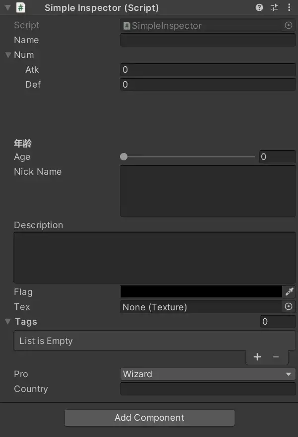
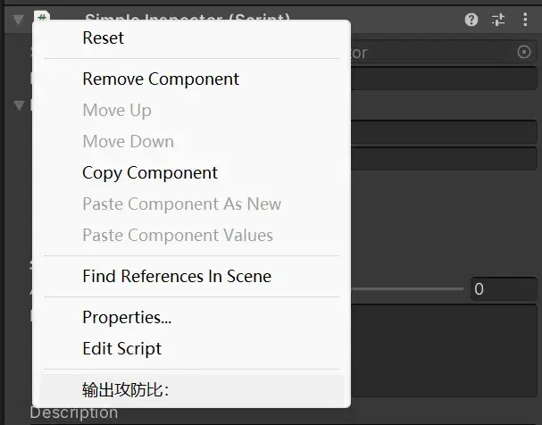
1 2 3 4 5 6 7 8 9 10 11 12 13 14 15 16 17 18 19 20 21 22 23 24 25 26 27 28 using System.Collections;using System.Collections.Generic;using UnityEngine;AddComponentMenu("自定义控制器/玩家控制器" , 1) ]ExecuteInEditMode ]RequireComponent(typeof(BoxCollider)) ]public class Player : MonoBehaviour void Update ()"Update" );
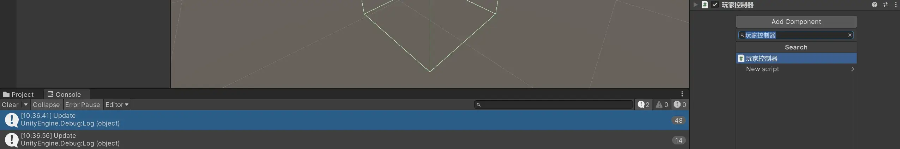
创建一个多选的列表：
1 2 3 4 5 6 7 [Flags ]public enum PlayerLoveColor1 ,2 ,4 ,
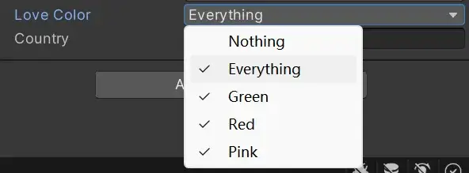
04-05 编辑器检视器面板深度扩展 1
编辑 Assets/Scripts/Player.cs：
1 2 3 4 5 6 7 8 9 10 11 12 13 14 15 16 17 18 19 20 21 22 23 24 25 26 27 28 29 30 31 32 33 34 35 36 37 38 39 40 41 42 43 44 45 46 47 48 49 50 51 52 53 54 using System;using System.Collections;using System.Collections.Generic;using UnityEngine;public enum PlayerProProfession0 ,Flags ]public enum PlayerLoveColor1 ,2 ,4 ,AddComponentMenu("自定义控制器/玩家控制器" , 1) ]ExecuteInEditMode ]RequireComponent(typeof(BoxCollider)) ]public class Player : MonoBehaviour public int ID;public string Name;public float Atk;public bool isMan;public Vector3 HeadDir;public Color Hair;public GameObject Weapon;public Texture Cloth;public PlayerProProfession Pro;public PlayerLoveColor LoveColor;void Update ()"Update" );
创建 Assets/Editor/PlayerEditor.cs：
1 2 3 4 5 6 7 8 9 10 11 12 13 14 15 16 17 18 19 20 21 22 23 24 25 26 27 28 29 30 31 32 33 34 35 36 37 38 39 40 41 42 43 44 45 46 47 48 49 50 51 52 53 54 55 56 57 58 59 60 61 62 63 64 65 66 67 68 69 70 71 72 73 74 75 76 77 78 79 80 81 82 83 84 85 86 87 88 89 90 91 92 93 94 95 using System.Collections;using System.Collections.Generic;using UnityEngine;using UnityEditor;CustomEditor(typeof(Player)) ] public class PlayerEditor : Editor private Player _Componet;private void OnEnable ()as Player;private void OnDisable ()null ;public override void OnInspectorGUI ()"人物相关属性" );"玩家 ID" , _Componet.ID);"玩家名称" , _Componet.Name);"玩家攻击力" , _Componet.Atk);"是否为男性" , _Componet.isMan);"头部方向" , _Componet.HeadDir);"颜色" , _Componet.Hair);"武器" , _Componet.Weapon, typeof (GameObject), true ) as GameObject;"衣服材质贴图" , _Componet.Cloth, typeof (Texture), true ) as Texture;"职业" , _Componet.Pro);"爱好" , _Componet.LoveColor);"Items" );new GUIContent("攻击力" ), _Componet.Atk, 0 , 100 );if (_Componet.Atk > 80 )"攻击力过高" , MessageType.Error);if (_Componet.Atk < 20 )"攻击力过低" , MessageType.Warning);"来个按钮" );"来个按钮" );"再来个按钮" );"再来个按钮" );
此时就会修改 Player 的显示面板：
06 编辑器菜单栏扩展
创建 Assets/Editor/Menu.cs：
1 2 3 4 5 6 7 8 9 10 11 12 13 14 using System.Collections;using System.Collections.Generic;using UnityEngine;using UnityEditor;public class Menu {MenuItem("工具/导出 AB 资源包" ) ]static void BuildAB ()
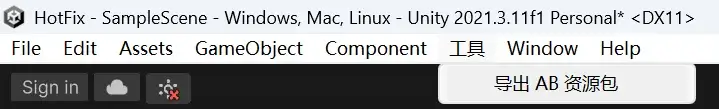
07 编辑器场景视窗扩展
创建 Assets/Editor/PopWindow.cs：
1 2 3 4 5 6 7 8 9 10 11 12 13 14 15 16 17 18 19 20 21 22 23 24 25 26 27 28 29 30 31 32 33 34 35 36 37 38 39 40 41 42 43 44 45 46 47 48 49 50 51 52 53 54 55 56 57 58 59 using System.Collections;using System.Collections.Generic;using UnityEngine;using UnityEditor;public class PopWindow : EditorWindow MenuItem("工具/创建窗口" ) ]static void OpenWindow ()false , "弹窗标题" , true );new Vector2(400 , 300 );new Vector2(800 , 600 );private void OnEnable ()"OnEnable" );private void OnDisable ()"OnDisable" );private void Update ()"Update" );private void OnGUI ()if (GUILayout.Button("测试点击" ))"测试点击" );private void OnHierarchyChange ()"hierarchy" );private void OnProjectChange ()"project" );private void OnSelectionChange ()
创建一个 Assets/Scripts/NodeManager.cs：
1 2 3 4 5 6 7 8 9 10 11 12 13 14 15 16 17 18 19 20 using System.Collections.Generic;using UnityEngine;ExecuteInEditMode ]public class NodeManager : MonoBehaviour public List<GameObject> nodes = new List<GameObject>();void OnDrawGizmos ()if (nodes == null || nodes.Count < 2 )return ;for (int i = 0 ; i < nodes.Count - 1 ; i++)1 ].transform.position);
创建一个 Assets/Editor/NodeManagerEditor.cs：
1 2 3 4 5 6 7 8 9 10 11 12 13 14 15 16 17 18 19 20 21 22 23 24 25 26 27 28 29 30 31 32 33 34 35 36 37 38 39 40 41 42 43 44 45 46 47 48 49 50 51 52 53 54 55 56 57 58 59 60 61 62 63 64 65 66 67 68 69 70 71 72 73 74 75 76 77 78 79 80 81 82 83 84 85 86 87 88 89 90 91 92 93 94 95 96 97 98 99 100 101 102 103 104 105 106 107 108 109 110 111 112 113 114 115 116 117 118 119 120 121 122 123 124 125 126 127 128 129 130 131 132 133 134 135 136 137 138 139 140 141 142 143 144 145 146 147 148 149 150 151 152 153 154 155 156 157 158 using System.Collections;using System.Collections.Generic;using UnityEngine;using UnityEditor;public class NodeWindow : EditorWindow static NodeWindow window;static GameObject nodeManager;public static void OpenWindow (GameObject manager )void Update ()public static void CloseWindow ()CustomEditor(typeof(NodeManager)) ]public class NodeManagerEditor : Editor bool isEditor = false ; void OnEnable ()public override void OnInspectorGUI ()"nodes" );new GUIContent("路径" ), true );if (!isEditor && GUILayout.Button("开始编辑" ))true ; else if (isEditor && GUILayout.Button("结束编辑" ))false ; if (GUILayout.Button("删除最后一个节点" ))else if (GUILayout.Button("删除所有节点" ))void OnSceneGUI ()if (!isEditor) return ;if (Event.current.button == 0 && Event.current.type == EventType.MouseDown)if (Physics.Raycast(ray, out hit, 100 ))0.1f );void InstancePathNode (Vector3 position )"PathNode" );void RemoveAtLast ()if (manager.nodes.Count > 0 )1 ]);1 );void RemoveAll ()for (int i = 0 ; i < manager.nodes.Count; i++)if (manager.nodes[i] != null )
创建一个 Assets/Resources/PathNode.prefab：
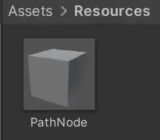
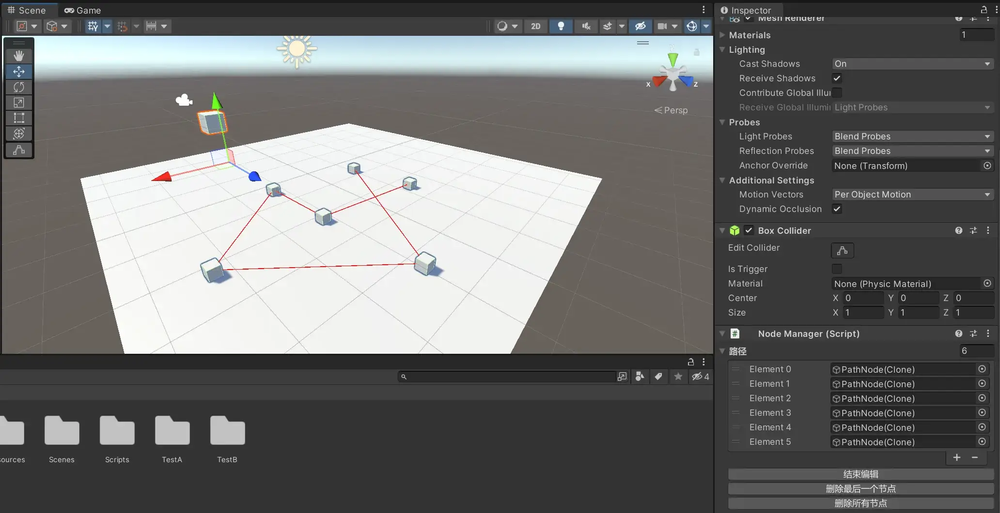
AB 包
08 复习及今天介绍
AB 包和 Resources 的区别
存储
Resources 内部资源存储在游戏的发布包中，
AB 包存储在独立的文件中（AB 包存储在非特殊目录下时，不在游戏的发布包中）。
加载
Resources 内部资源使用 Resources.Load()
AB 包（可以理解为可下载的 Resources）
获得 AB 包文件（下载，解压 streaming 拷贝到可写目录）
加载步骤 1：通过 AB 包文件路径，加载 AB 包文件
加载步骤 2：通过名称（资源，o）加载内部资源
AssetBundle 的定义
AssetBundle 是把一些资源文件，场景文件或二进制文件以某种紧密的方式保存在一起的一些文件。
AssetBundle 内部不能包含 C# 脚本文件，AssetBundle 可以配合 Lua 实现资源和游戏逻辑代码的更新。
AssetBundle 是独立于游戏主包存在的资源存储文件 ，使用内部资源时，需要单独下载和加载。
热更新
不关闭 Unity 应用的前提，实现游戏资源和代码逻辑的更新。
09 AB 包介绍及导出工具实现
选中若干资源，打包成 AssetBundle（给其命名）。
创建 Assets/Editor/ExportAB.cs：
1 2 3 4 5 6 7 8 9 10 11 12 13 14 15 16 17 18 19 20 21 22 23 24 25 26 27 28 29 30 31 32 using UnityEngine;using UnityEditor;using System.IO;public class ExportAB MenuItem("AB 包/导出" ) ]public static void Export ()"导出 AB 包" );string path = Application.dataPath;0 , path.Length - 6 ) + "ab" ;if (!Directory.Exists(path))"导出完成" );
BuildAssetBundleOptions 是 Unity 提供的一组标志枚举，用于控制 BuildPipeline.BuildAssetBundles 方法的行为。以下是常见的选项：
常见的 BuildAssetBundleOptions 选项：
选项
说明
None无特殊选项，使用默认的打包方式。
UncompressedAssetBundle生成未压缩的 AB 包，加载更快但占用空间更大。
DisableWriteTypeTree禁用类型树，减少文件大小，但可能会导致跨版本不兼容。
DeterministicAssetBundle生成一致的 AB 文件，确保相同资源的哈希值相同，以便版本管理。
ForceRebuildAssetBundle强制重新构建所有 AB 文件，而不使用已有的缓存。
IgnoreTypeTreeChanges忽略类型树的更改，提高跨 Unity 版本的兼容性。
AppendHashToAssetBundleName在 AB 文件名后追加哈希值，以确保版本更新时不会覆盖旧版本。
ChunkBasedCompression使用 LZ4 压缩，提高运行时解压速度，适用于频繁加载的资源。
StrictMode在构建时启用严格模式，检测可能的错误并抛出异常。
DryRunBuild进行模拟构建，但不会实际生成 AB 文件，可用于调试。
10 AB 包资源简单加载
创建 Assets/Scripts/Config.cs：
1 2 3 4 5 6 7 8 using System.Collections;using System.Collections.Generic;using UnityEngine;public class Config public static string ABPath = Application.dataPath.Substring(0 , Application.dataPath.Length - 6 ) + "ab" ;
创建 Assets/Scripts/SimpleLoad.cs 并绑定在场景的某个组件中：
1 2 3 4 5 6 7 8 9 10 11 12 13 14 15 16 17 18 19 20 21 22 23 24 25 26 using System.Collections;using System.Collections.Generic;using UnityEngine;using UnityEngine.UI;public class SimpleLoad : MonoBehaviour public Image Icon;void Start ()"/ui" );"参考图" );"/Canvas/Image" ).GetComponent<Image>().sprite = sp;"加载完成" + sp.name);false );
11 资源热更新演示
导入资源中的 AB 包：ab/old/test 和 ab/New/test
创建 Assets/Scripts/HotUpdate.cs 并导入到场景中：
1 2 3 4 5 6 7 8 9 10 11 12 13 14 15 16 17 18 19 20 21 22 23 24 25 26 27 28 using System.Collections;using System.Collections.Generic;using UnityEngine;using UnityEngine.UI;public class HotUpdate : MonoBehaviour public Image Icon;void Start ()"Old/test" );"btn_go_back" );false );public void ChangeAB ()"New/test" );"btn_go_back" );false );
Button 绑定 ChangeAB()，后，即可按下按钮更改图片。
12 优化导出工具及依赖加载
编辑 ExportAB.cs，将 AB 包导出至不同的平台：
1 2 3 4 5 6 7 8 9 10 11 12 13 14 15 16 17 18 19 20 21 22 23 [MenuItem("AB 包导出/Windows" ) ]public static void ForWindows ()MenuItem("AB 包导出/Mac" ) ]public static void ForMac ()MenuItem("AB 包导出/iOS" ) ]public static void ForiOS ()MenuItem("AB 包导出/Android" ) ]public static void ForAndroid ()
12 优化导出工具及依赖加载
加载 AB 包内部数据
如果想处理依赖关系的加载，则必须加载主AB包，因为依赖关系的存储，都存储在主 AB 包的配置文件中
第一步（加载依赖的 AB 包文件）
加载主 AB 包
根据主 AB 包的配置文件，获得我当前需要加载的 AB 所依赖的 AB 们
将所有的依赖 AB 们，加载进来
第二步（加载 AB 包文件）
AB 包 = AssetBundle.LoadFromFile(AB 包文件路径)AssetBundle.LoadFromFileSync(AB 包文件路径)
第三步（加载 AB 包内部资源）
注意！！！：AB 包不能重复加载
1 2 3 4 5 6 7 8 9 10 11 12 13 14 15 16 17 18 19 20 21 22 23 24 25 26 27 28 29 30 public class Load : MonoBehaviour void Start ()"/ab" );"AssetBundleManifest" );string [] deps = manifest.GetAllDependencies("test2" );for (int i = 0 ; i < deps.Length; i++)"/" + deps[i]);"/test2" );"Image" );as Gameobject;"/Canvas" ).transform);
13 异步加载
使用协程 IEnumerator 进行异步加载（Resources / AB 包 两种方式），创建 Assets/Scripts/AsyncLoad.cs：
1 2 3 4 5 6 7 8 9 10 11 12 13 14 15 16 17 18 19 20 21 22 23 24 25 26 27 28 29 30 using System.Collections;using System.Collections.Generic;using UnityEngine;using UnityEngine.UI;public class AsyncLoad : MonoBehaviour void Start ()IEnumerator LoadImage () "参考图" );yield return rr;"/Canvas/Image" ).GetComponents<Image>()[0 ].sprite = rr.asset as Sprite;IEnumerator LoadAB () "/ui" );yield return abcr;"/Canvas/Image" ).GetComponents<Image>()[0 ].sprite = abcr.assetBundle.LoadAsset<Sprite>("参考图" );
14 内存分析
创建一个 Assets/Scripts/Memory.cs：
1 2 3 4 5 6 7 8 9 10 11 12 13 14 15 16 17 18 19 20 21 22 23 24 25 26 27 28 29 30 31 32 33 34 35 36 37 38 39 40 41 42 using UnityEngine;using UnityEngine.UI;public class Memory : MonoBehaviour public Image img;public void LoadFile ()"LoadFile()" );if (ab == null )"/ui" );public void LoadImage ()"LoadImage()" );if (ab!= null )"参考图" );public void UnloadFile ()"UnloadFile()" );if (ab != null )true ); public void Recycling ()"Recycling()" );
按 Ctrl + 7 即可调用出内存分析界面，在加载 AB 包后，内存使用量会上升。
Lua
15 Lua 环境搭建
安装 LuaForWindows_v5.1.5-52.exe：
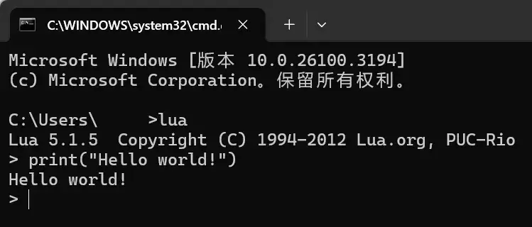
这个仓库可以让你在线使用 Jupyter Notebook 进行 Lua 的编写。
16 Lua 变量与数据类型
Lua 注释：
变量操作：
1 2 name = "hxsd" print (name)
1 2 3 local name = "Unity" print (type (name))print (type (type (name)))
1 print (type (bb) == "nil" )
1 2 print (type (123 ))print (type (1.0 ))
17 Lua 字符串操作
1 2 3 4 5 6 7 8 9 10 local str1 = "Abc" local str2 = 'def' print (str1 .. str2)print (#str1)print (string .upper (str1))print (string .lower (str1))
1 2 3 4 5 local str3 = [[ one two ]]
1 2 3 4 5 print (string .find ("abcdefg" , "cde" ))
1 2 print (string .reverse ("abcdefg" ))
1 print (string .sub ("abcdefg" , 3 ))
1 print (string .sub ("abcdefg" , 3 , 6 ))
1 2 local data = "abcdefghijkm" print (string .sub (data, 3 , #data - 1 ))
1 print (string .format ("I'm the %d player, other is %d" , 1 , 2 ))
1 I'm the 1 player, other is 2
1 print (string .rep ("abc" , 2 ))
1 2 3 4 5 6 print (string .gsub ("abcd" , "bc" , "**" ))
1 print ((string .gsub ("abcd" , "bc" , "**" )))
1 2 local new_str = string .gsub ("abcd" , "bc" , "**" )print (new_str)
18 Lua 逻辑控制
1 2 3 4 5 6 7 8 9 10 11 12 13 14 15 16 17 18 19 20 21 22 23 24 25 26 27 28 local data = {}"abc" , 123 , [-1 ] = 100 , [0 ] = 99 , [4 ] = 233 }print (data[1 ])print (data[2 ])print (data[-1 ])print (data[0 ])print (data[4 ])print (data[123 ])print (#data)1 ] = "def" print (data[1 ])local data2 = {{"aa" , "bb" }, {11 , 22 }}print (data2[2 ][1 ])
1 2 3 4 5 6 7 8 9 abc
Lua 没有 ++
Lua 没有 +=，-=，*=
1 2 3 4 5 6 7 8 9 if (false )then print ("条件 1 达成" )elseif (true )then print ("elseif 达成" )else print ("else 达成" )end
1 2 3 4 5 6 7 if (true )then if (true )then print ("进入第二层 if" )end end
1 2 3 4 5 6 local num = 1 while (num < 3 )do print (num)1 end
19 Lua 语法介绍
1 2 3 4 5 6 local num = 1 repeat print (num)1 until (num > 5 )
1 2 3 4 5 6 7 8 9 local data = {"aa" , "bb" , "cc" , "dd" , "ee" }for i = 1 , #data, 2 do print (data[i])end
1 2 3 4 5 6 7 8 9 10 repeat if (true )then print ("此处跳出" )break end until (true )print ("继续执行" )
1 2 3 4 5 6 7 8 9 10 11 12 13 14 15 16 17 18 19 20 21 22 23 24 25 26 local data = {one = "cc" , "aa" , "bb" , [4 ] = 3 , [-1 ] = 4 , ["two" ] = "dd" }for k, v in ipairs (data)do print ("k: " .. k .. ", v: " .. v)end print ("-------------------" )for k, v in pairs (data)do print ("K: " .. k .. ", V: " .. v)end
1 2 3 4 5 6 7 8 9 k: 1, v: aa
20 Lua 函数与表
1 2 3 4 5 function func1 () print ("这是 func1" )end
1 2 3 4 5 6 local func3 = function (a, b) print (a + b)end 5 , 7 )5 , 7 , 9 )
1 2 3 4 5 6 7 8 9 10 11 12 13 14 15 16 local func4 = function (...) local arg = {...}local total = 0 for k, v in pairs (arg )do end print (total)end 1 , 2 , 3 )1 , 2 , 3 , 4 , 5 )
1 2 3 4 5 6 7 8 9 10 function func5 () return 99 , 100 end print (func5())local num1, num2 = func5()print (num1)print (num2)
1 2 3 4 5 6 7 8 9 10 11 12 13 14 15 16 17 18 19 20 21 22 23 24 25 26 27 28 29 30 31 32 33 34 35 local data = {one = "cc" , "aa" , "bb" , [4 ] = 3 , [-1 ] = 4 , ["two" ] = "dd" }print (data[2 ])print (data["one" ])print (data.two)function () print ("data 表中的 func1 函数" )end function () print (data.two)end function (self) print (self .two)end function data:func4 () print ("func3: " .. self .two)end
1 2 3 4 5 6 7 bb
21 Lua 子文件与元表
创建 appName.lua：
1 2 3 4 5 local config = {}config .appName = "hxsd" return config
1 2 local config = require ("appName" )print (config .appName)
元表：Lua 元表(Metatable) | 菜鸟教程
1 2 3 4 5 6 7 8 9 10 11 12 13 14 15 16 17 18 19 20 21 22 local t1 = {1 , 2 , 3 }print (t1)local meta = {__tostring = function (t) local format = "{" for k, v in pairs (t)do format = format .. v .. ', ' end format = format .. "}" return format end setmetatable (print (t1)
1 2 { 1, 2, 3 }
这里说直接 print() 列表会输出内存地址，然而这里并没有，是不是 Lua 更新了？
xLua
23 热更新简介
什么是冷更新
开发者将测试好的代码，发布到应用商店的审核平台，平台方会进行稳定性及性能测试。测试成功后，用户即可在 AppStore，看到应用的更新信息，用户点击应用更新后，需要先关闭应用，再进行更新。
什么是热更新
广义：无需关闭应用，不停机状态下修复漏洞，更新资源等，重点是更新逻辑代码。
狭义定义（iOS 热更新）：无需将代码重新打包提交至 AppStore，即可更新客户端的执行代码，即不用下载 app 而自动更新程序。
现状：苹果禁止了 C# 的部分反射操作，禁止 JIT（即时编译，程序运行时创建并运行新代码），不允许逻辑热更新，只允许使用 AssetBundle 进行资源热更新。
注意：2017 年，苹果更新了热更新政策说明，上线后的项目，一旦发现使用热更新，一样会以下架处理。
常见的 Unity 热更新插件
xLua
接触一个新的 Lua 项目时，先要弄懂 Lua 的加载器规则，只有这样，才能弄懂项目的 Lua 执行流程。
为什么要用 Lua 调用 C# 代码？
C# 实现的系统，因为 Lua 可以调用，所以完全可以换成 Lua 实现，因为 Lua 可以即时更改，即时运行，所以游戏的代码逻辑就可以随时修改。
实现和 C# 相同效果的系统，如何实现？
Lua 调用 Unity 的各种 API，从而实现 C# 开发系统同样的效果。
为什么要用 C# 调用 Lua 代码？
Unity 是基于 C# 语言开发的，所有生命周期函数都是基于 C# 实现，xLua 本身是不存在 Unity 的相关生命周期函数的。如果希望 xLua 能够拥有生命周期函数，那么我们可以实现 C# 作为 Unity 原始调用，再使用 C# 调用 Lua 对应的方法。
从 Tencent/xLua: xLua is a lua programming solution for C# ( Unity, .Net, Mono) , it supports android, ios, windows, linux, osx, etc. 获取 xLua 的代码放置到项目的 Assets/ 下。
24 xLua 基础调用
创建 Assets/Scripts/Rookie/First.cs：
1 2 3 4 5 6 7 8 9 10 11 12 13 14 15 16 17 18 19 using UnityEngine;using XLua; public class First : MonoBehaviour void Start ()new LuaEnv();"print('Hello World!')" );
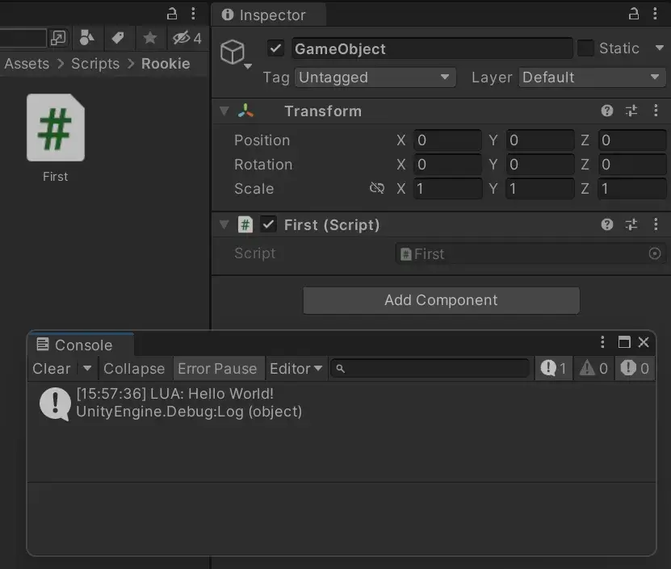
创建 Assets/Scripts/Rookie/DoString.cs：
1 2 3 4 5 6 7 8 9 10 11 12 13 14 15 16 17 18 19 20 21 22 23 24 25 26 27 28 29 30 31 32 33 34 35 using System.Collections;using System.Collections.Generic;using UnityEngine;using XLua;public class DoString : MonoBehaviour void Start ()public void LuaCallCSharpCode ()new LuaEnv();"CS.UnityEngine.Debug.Log('From lua')" );public void LuaReturnData ()new LuaEnv();object [] data = env.DoString("return 100, true" );"data[0] = " + data[0 ]);"data[1] = " + data[1 ]);
25 xLua 环境控制
创建 Assets/Scripts/Rookie/Loader.cs：
1 2 3 4 5 6 7 8 9 10 11 12 13 14 15 16 17 18 using System.Collections;using System.Collections.Generic;using UnityEngine;using XLua;public class Loader : MonoBehaviour void Start ()new LuaEnv();"require('test')" );
创建 Assets/StreamingAssets/test.lua：
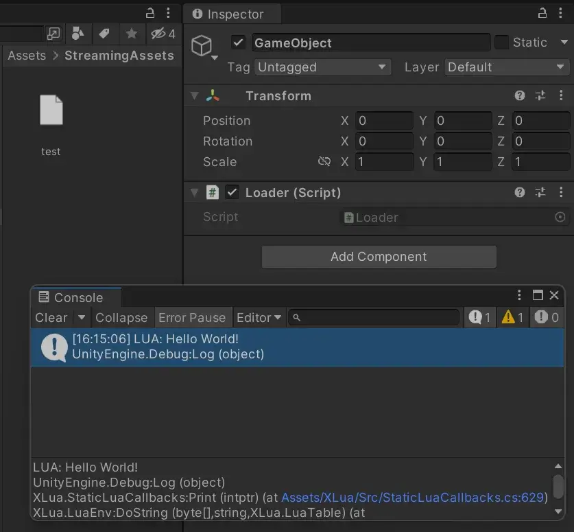
要想修改加载 Lua 的目录：
1 2 3 4 5 6 7 8 9 10 11 12 13 14 15 16 17 18 19 20 21 22 23 24 25 26 27 28 29 30 31 32 33 34 35 36 37 38 39 using System.Collections;using System.Collections.Generic;using System.IO;using UnityEngine;using XLua;public class Loader : MonoBehaviour void Start ()public void MyLoader ()new LuaEnv();"require('test')" );public byte [] ProjectLoader (ref string filepathstring path = Application.dataPath;0 , path.Length - 7 ) + "/DataPath/Lua" + filepath + ".lua" ;"加载 Lua 文件：" + path);return File.ReadAllBytes(path);
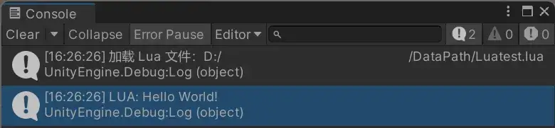
全局控制 Lua 加载的路径：
创建 Assets/Tool/xLuaEnv.cs：
1 2 3 4 5 6 7 8 9 10 11 12 13 14 15 16 17 18 19 20 21 22 23 24 25 26 27 28 29 30 31 32 33 34 35 36 37 38 39 40 41 42 43 44 45 46 47 48 49 50 51 52 53 54 55 56 57 58 59 60 61 62 63 64 65 66 67 68 69 70 71 72 73 74 75 76 77 78 79 80 81 82 using System.Collections;using System.Collections.Generic;using System.IO;using UnityEngine;using XLua;public class xLuaEnv #region Singleton private static xLuaEnv _Instance = null ;public static xLuaEnv Instanceget if (_Instance == null )new xLuaEnv();return _Instance;#endregion #region Create LuaEnv private LuaEnv _Env;private xLuaEnv ()new LuaEnv();#endregion #region Loader private byte [] _ProjectLoader(ref string filepath)string path = Application.dataPath;0 , path.Length - 7 ) + "/DataPath/Lua/" + filepath + ".lua" ;"xLuaEnv: Load Lua file: " + path);if (File.Exists(path))return File.ReadAllBytes(path);else return null ;#endregion #region Free LuaEnv public void Free ()null ;#endregion #region Run Lua public object [] DoString (string codereturn _Env.DoString(code);#endregion
创建 DataPath/Lua/test2.lua：
1 print ("Hello World, I' m test2.lua" )
创建 Scripts/Rookie/TestSingleton.cs：
1 2 3 4 5 6 7 8 9 10 11 12 13 14 15 16 using System.Collections;using System.Collections.Generic;using UnityEngine;public class TestSingleton : MonoBehaviour void Start ()"require('test2')" );void OnDestroy ()
26 xLua 的 Lua 调用 C# 1
创建 Assets/Scripts/C2L/LuaCallStatic.cs：
1 2 3 4 5 6 7 8 9 10 11 12 13 14 15 16 17 18 19 20 21 22 23 24 25 26 27 28 29 30 31 32 33 34 35 36 37 38 using System.Collections;using System.Collections.Generic;using UnityEngine;namespace HX public static class TestStatic public static int ID = 99 ;public static string Nameget ;set ;public static string Output ()return "static" ;public static void Default (string str = "abc" public class LuaCallStatic : MonoBehaviour void Start ()"require('C2L/LuaCallStatic')" );void OnDestroy ()
创建 DataPath/Lua/C2L/LuaCallStatic.lua：
1 2 3 4 5 6 7 8 9 10 11 12 13 14 15 16 17 18 print (CS.HX.TestStatic.ID)"admin" ;print (CS.HX.TestStatic.Name)print (CS.HX.TestStatic.Output())"def" );
27 xLua 的 Lua 调用 C# 2
创建 Assets/Scripts/C2L/LuaCallObject.cs：
1 2 3 4 5 6 7 8 9 10 11 12 13 14 15 16 17 18 19 20 21 22 23 24 25 26 27 28 29 30 31 32 33 34 35 36 37 38 using System.Collections;using System.Collections.Generic;using UnityEngine;public class Npc public string Name;public int HPget ;set ;public Npc ()public Npc (string namepublic string Output ()return this .Name;public class LuaCallObject : MonoBehaviour void Start ()"require('C2L/LuaCallObject')" );void OnDestroy ()
创建 DataPath/Lua/C2L/LuaCallObject.lua：
1 2 3 4 5 6 7 8 9 10 11 12 13 14 15 16 17 18 local obj = CS.Npc()100 print (obj.HP)local obj1 = CS.Npc("admin" )print (obj1.Name)print (obj1:Output())local go = CS.UnityEngine.GameObject("LuaCreateGO" )
创建 Assets/Scripts/C2L/LuaCallStruct.cs：
1 2 3 4 5 6 7 8 9 10 11 12 13 14 15 16 17 18 19 20 21 22 23 24 25 using System.Collections;using System.Collections.Generic;using UnityEngine;public struct TestStructpublic string Name;public string Output ()return Name;public class LuaCallStruct : MonoBehaviour void Start ()"require('C2L/LuaCallStruct')" );void OnDestroy ()
创建 DataPath/Lua/C2L/LuaCallStruct.lua：
1 2 3 4 5 6 local obj = CS.TestStruct()"admin" print (obj.Name)
创建 Assets/Scripts/C2L/LuaCallEnum.cs：
1 2 3 4 5 6 7 8 9 10 11 12 13 14 15 16 17 18 19 20 21 22 23 24 using System.Collections;using System.Collections.Generic;using UnityEngine;public enum TestEnum0 ,public class LuaCallEnum : MonoBehaviour void Start ()"require('C2L/LuaCallEnum')" );void OnDestroy ()
创建 DataPath/Lua/C2L/LuaCallEnum.lua：
1 2 3 4 print (CS.TestEnum.LoL)print (CS.TestEnum.Dota2)
28 xLua 的 Lua 调用 C# 3
创建 Assets/Scripts/C2L/LuaCallOverload.cs：
1 2 3 4 5 6 7 8 9 10 11 12 13 14 15 16 17 18 19 20 21 22 23 24 25 26 27 28 29 30 31 32 using System.Collections;using System.Collections.Generic;using UnityEngine;public class TestOverload public static void Test (int id"数字类型：" + id);public static void Test (string name"字符串类型：" + name);public static void Test (int id, string name"两个数值：" + id + "，" + name);public class LuaCallOverload : MonoBehaviour void Start ()"require('C2L/LuaCallOverload')" );void OnDestroy ()
创建 DataPath/Lua/C2L/LuaCallOverload.lua：
1 2 3 CS.TestOverload.Test(99 )"admin" )100 , "root" )
创建 Assets/Scripts/C2L/LuaCallBase.cs：
1 2 3 4 5 6 7 8 9 10 11 12 13 14 15 16 17 18 19 20 21 22 23 24 25 26 27 28 29 30 31 32 33 34 35 36 37 using System.Collections;using System.Collections.Generic;using UnityEngine;public class Father public string Name = "father" ;public void Talk ()"这是父类中的方法" );public virtual void Override ()"这是父类中的虚方法" );public class Child : Father public override void Override ()"这是子类中的重写方法" );public class LuaCallBase : MonoBehaviour void Start ()"require('C2L/LuaCallBase')" );void OnDestroy ()
创建 DataPath/Lua/C2L/LuaCallOverload.lua：
1 2 3 4 5 6 7 8 9 10 local father = CS.Father()print (father.Name)local child = CS.Child()print (child.Name)
创建 Assets/Scripts/C2L/LuaCallExtend.cs：
1 2 3 4 5 6 7 8 9 10 11 12 13 14 15 16 17 18 19 20 21 22 23 24 25 26 27 28 29 30 31 32 33 34 35 36 using System.Collections;using System.Collections.Generic;using UnityEngine;using XLua;public class TestExtend public void Output ()"类本身带的方法" );LuaCallCSharp ]public static class MyExtend public static void Show (this TestExtend obj"类扩展实现的方法" );public class LuaCallExtend : MonoBehaviour void Start ()"require('C2L/LuaCallExtend')" );void OnDestroy ()
这是 C# 的扩展方法（Extension Method） 写法，它允许你为已存在的类添加新方法，而无需修改该类的代码。
代码解析：
TestExtend 类
这是一个普通的 C# 类，定义了一个 Output 方法。
MyExtend 静态类
该类用于存放扩展方法。
Show 方法是一个 扩展方法 ，它的第一个参数 this TestExtend obj 表示该方法是 TestExtend 类的扩展方法。
创建 DataPath/Lua/C2L/LuaCallExtend.lua：
1 2 3 4 5 6 local obj = CS.TestExtend()
创建 Assets/Scripts/C2L/LuaCallDelegate.cs：
1 2 3 4 5 6 7 8 9 10 11 12 13 14 15 16 17 18 19 20 21 22 23 24 25 26 27 28 using System.Collections;using System.Collections.Generic;using UnityEngine;public delegate void DelegateLua ()public class TestDelegate public static DelegateLua Static;public DelegateLua Dynamic;public static void StaticFunc ()"C# 静态成员函数" );public class LuaCallDelegate : MonoBehaviour void Start ()"require('C2L/LuaCallDelegate')" );void OnDestroy ()
创建 DataPath/Lua/C2L/LuaCallDelegate.lua：
1 2 3 4 5 6 7 8 9 10 11 12 13 14 15 16 17 18 19 20 21 22 23 24 25 26 27 28 29 30 31 32 33 34 35 36 37 38 39 40 41 42 43 44 45 46 47 48 49 50 51 52 53 54 55 56 nil print ("-------------------" )local func = function () print ("这是 Lua 的函数" )end nil print ("-------------------" )local obj = CS.TestDelegate()nil print ("-------------------" )
创建 Assets/Scripts/C2L/LuaCallEvent.cs：
1 2 3 4 5 6 7 8 9 10 11 12 13 14 15 16 17 18 19 20 21 22 23 24 25 26 27 28 29 30 31 32 33 34 35 36 using UnityEngine;public delegate void EventLua ()public class TestEvent public static event EventLua Static;public static void StaticFunc ()"这是静态函数" );public static void CallStatic ()if (Static != null )public event EventLua Dynamic;public void CallDynamic ()if (Dynamic != null )public class LuaCallEvent : MonoBehaviour void Start ()"require('C2L/LuaCallEvent')" );void OnDestroy ()
创建 DataPath/Lua/C2L/LuaCallEvent.lua：
1 2 3 4 5 6 7 8 9 10 11 12 13 14 15 16 "+" , CS.TestEvent.StaticFunc)"-" , CS.TestEvent.StaticFunc)local func = function () print ("来自于 Lua 的回调函数" )end local obj = CS.TestEvent()"+" , func)"-" , func)
29 xLua 的 Lua 调用 C# 4
创建 Assets/Scripts/C2L/LuaCallGenericType.cs：
1 2 3 4 5 6 7 8 9 10 11 12 13 14 15 16 17 18 19 20 21 22 23 24 25 26 27 28 29 30 31 32 using UnityEngine;public class TestGenericType public void Output <T >(T data )"泛型方法：" + data.ToString());public void Output (int dataint >(data);public void Output (string datastring >(data);public class LuaCallGenericType : MonoBehaviour void Start ()typeof (BoxCollider));"require('C2L/LuaCallGenericType')" );void OnDestroy ()
创建 DataPath/Lua/C2L/LuaCallGenericType.lua：
1 2 3 4 5 6 7 local obj = CS.TestGenericType()99 )"admin" )local go = CS.UnityEngine.GameObject("LuaCreate" )
创建 Assets/Scripts/C2L/LuaCallOutRef.cs：
1 2 3 4 5 6 7 8 9 10 11 12 13 14 15 16 17 18 19 20 21 22 23 24 25 26 27 28 29 30 31 32 33 34 35 36 37 using UnityEngine;public class TestOurRef public static string Func1 ()return "Func1" ;public static string Func2 (string str1, out string str2"Func2 out" ;return "Func2" ;public static string Func3 (string str1, ref string str2"Func3 Ref" ;return "Func3" ;public static string Func4 (ref string str1, string str2"Func4 Ref" ;return "Func4" ;public class LuaCallOutRef : MonoBehaviour void Start ()"require('C2L/LuaCallOutRef')" );void OnDestroy ()
创建 DataPath/Lua/C2L/LuaCallOutRef.lua：
1 2 3 4 5 6 7 8 9 10 11 12 13 14 15 16 17 local r1 = CS.TestOutRef.Func1()print (r1)local out2local r2, out1 = CS.TestOutRef.Func2("admin" , out2)print (r2, out1, out2)local ref2local r3, ref1 = CS.TestOutRef.Func3("root" , ref2)print (r2, ref1, ref2)local ref4local r4, ref3 = CS.TestOutRef.Func4(ref4, "test" )print (r4, ref3, ref4)
31 C# 调用 Lua 方法 1
编辑 Assets/Scripts/Tool/xLuaEnv.lua：
1 2 3 4 5 6 7 8 9 10 11 12 13 14 15 16 17 18 19 20 21 22 23 24 25 26 27 28 29 30 31 32 33 34 35 36 37 using System.Collections;using System.Collections.Generic;using UnityEngine;using XLua;public class CsharpCallVariable : MonoBehaviour void Start ()"require('L2C/CSharpCallVariable')" );int num = g.Get<int >("num" );float rate = g.Get<float >("rate" );bool isWoman = g.Get<bool >("isWoman" );string name = g.Get<string >("name" );"数字：" + num);"浮点数：" + rate);"布尔：" + isWoman);"字符串：" + name);void OnDestroy ()
创建 Assets/Scripts/L2C/CsharpCallVariable.cs：
1 2 3 4 5 6 7 8 9 10 11 12 13 14 15 16 17 18 19 20 21 22 23 24 25 26 27 28 29 30 31 32 33 34 35 using UnityEngine;using XLua;public class CsharpCallVariable : MonoBehaviour void Start ()"require('L2C/CSharpCallVariable')" );int num = g.Get<int >("num" );float rate = g.Get<float >("rate" );bool isWoman = g.Get<bool >("isWoman" );string name = g.Get<string >("name" );"数字：" + num);"浮点数：" + rate);"布尔：" + isWoman);"字符串：" + name);void OnDestroy ()
创建 DataPath/Lua/L2C/CsharpCallVariable.lua：
1 2 3 4 num = 100 99.99 false "admin"
32 C# 调用 Lua 方法 2
创建 Assets/Scripts/L2C/CSharpCallFunction.cs：
1 2 3 4 5 6 7 8 9 10 11 12 13 14 15 16 17 18 19 20 21 22 23 24 25 26 27 28 29 30 31 32 33 34 35 36 37 38 39 40 41 42 43 44 45 46 47 using System.Collections;using System.Collections.Generic;using UnityEngine;using XLua;CSharpCallLua ]public delegate void Func1 ()CSharpCallLua ]public delegate void Func2 (string nameCSharpCallLua ]public delegate string Func3 ()CSharpCallLua ]public delegate void Func4 (out string name, out int idpublic class CSharpCallFunction : MonoBehaviour void Start ()"require('L2C/CSharpCallFunction')" );"func1" );"func2" );"admin" );"func3" );"，被 C# 打印" );"func4" );string name;int id;out name, out id);", " + id);void OnDestroy ()
创建 DataPath/Lua/L2C/CSharpCallFunction.lua：
1 2 3 4 5 6 7 8 9 10 11 12 13 14 15 func1 = function () print ("这是 Lua 中的 func1" )end function (name) print ("这是 Lua 中的 func2，参数是：" .. name)end function () print ("这是 Lua 中的 func3" )end function () return "这是 Lua 中的 func4" , 100 end
编译一下：
XLua 默认不会支持 out 参数的委托 ，必须手动标记 [CSharpCallLua]。
运行 XLua/Generate Code，然后重启 Unity ，让 XLua 重新生成绑定代码。
如果你需要调用多个 Lua 方法，推荐使用接口 来管理，而不是单独获取每个方法。
33 C# 调用 Lua 方法 3
创建 Assets/Scripts/L2C/CSharpCallTable.cs：
1 2 3 4 5 6 7 8 9 10 11 12 13 14 15 16 17 18 19 20 21 22 23 24 25 26 27 28 29 30 31 32 33 34 35 36 37 38 39 40 41 42 43 44 45 46 47 48 49 50 51 52 53 54 55 56 57 58 59 60 61 62 63 64 65 66 67 68 69 70 using System.Collections;using System.Collections.Generic;using UnityEngine;using XLua;public delegate void OneStringParams (string namepublic delegate string OneStringReturn ()public delegate void TransSelf (LuaTable table )CSharpCallLua ]public delegate void TransMy (LuaCore table )GCOptimize ]public struct LuaCorepublic int ID;public string Name;public bool IsWoman;public OneStringParams Func1;public OneStringReturn Func2;public TransMy Func3;public TransMy Func4;public class CsharpCallTable : MonoBehaviour void Start ()"require('L2C/CsharpCallTable')" );public void UseLuaTable ()"Core" );string >("Name" ));string , string >("Name" , "admin" );"Func1" );"admin" );"Func2" );string result = func2(); "Func2 返回: " + result);"Func3" );"Func4" );void OnDestroy ()
创建 DataPath/Lua/L2C/CSharpCallTable.lua：
1 2 3 4 5 6 7 8 9 10 11 12 13 14 15 16 17 18 19 20 21 Core = {}100 "root" false function (name) print ("这是 Core 表的 Func1 函数，接收到 C# 数据" .. name)end function () return "这是 Core 表的 Func2 函数" end function (self) print ("这是 Core 表的 Func3 函数，Core 表的成员变量 Name 是 " .. self .Name)end function Core:Func4 () print ("这是 Core 表的 Func4 方法，Core 表的成员变量 Name 是 " .. self .Name)end
编译一下：